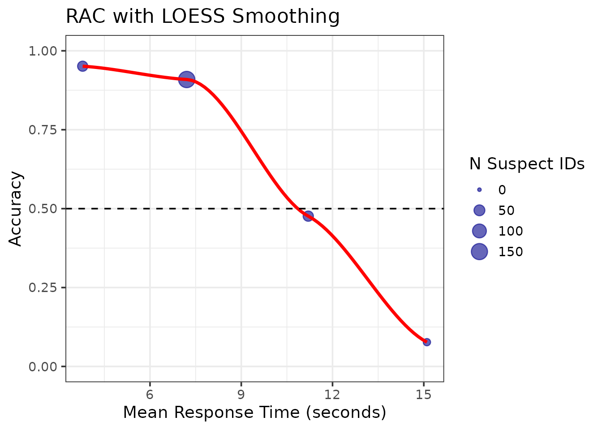

RAC Analysis: Response Time-Accuracy Characteristics
Colin Tredoux
2026-08-12
Source:vignettes/rac_analysis.Rmd
rac_analysis.RmdIntroduction
This vignette demonstrates RAC (Response Time-Accuracy Characteristic) analysis for eyewitness lineup data, a new feature in r4lineups inspired by pyWitness (Mickes et al., 2024).
What is RAC Analysis?
RAC analysis examines the relationship between response time and accuracy in lineup identifications. It plots suspect ID accuracy as a function of response time, similar to how CAC analysis plots accuracy as a function of confidence.
Why Use RAC?
Response time is an important variable in eyewitness research because:
- Fast responses often indicate strong memory - Witnesses with strong memory of the culprit can identify them quickly
- Response time is objective - Unlike confidence, it cannot be influenced by post-event information or verbal overshadowing
- Complementary to confidence - RAC and CAC together provide a fuller picture of memory strength
- Forensically useful - Response time can be recorded automatically in video-based lineups
Key References
Seale-Carlisle et al. (2019). Confidence and response time as indicators of eyewitness identification accuracy in the lab and in the real world. Journal of Applied Research in Memory and Cognition, 8(4), 420-428.
Mickes et al. (2024). pyWitness 1.0: A python eyewitness identification analysis toolkit. Behavior Research Methods, 56, 1533-1550.
Simulating Data with Response Times
Since most existing datasets don’t include response times, we’ll simulate realistic data:
set.seed(123)
# Simulate 500 lineup trials
# Target-present trials
tp_data <- data.frame(
target_present = TRUE,
# 200 correct IDs (fast, mean = 7s)
identification = c(rep("suspect", 200), rep("filler", 40), rep("reject", 60)),
response_time = c(
rnorm(200, mean = 7000, sd = 2500), # Correct IDs: fast
rnorm(40, mean = 11000, sd = 3000), # Filler picks: slower
rnorm(60, mean = 14000, sd = 4000) # Rejections: slowest
)
)
# Target-absent trials
ta_data <- data.frame(
target_present = FALSE,
# Innocent suspect picks are slower (weaker memory)
identification = c(rep("suspect", 50), rep("filler", 100), rep("reject", 50)),
response_time = c(
rnorm(50, mean = 12000, sd = 3500), # False IDs: slow
rnorm(100, mean = 10000, sd = 3000), # Filler picks
rnorm(50, mean = 13000, sd = 4000) # Correct rejections
)
)
# Combine and ensure positive times
lineup_data <- rbind(tp_data, ta_data)
lineup_data$response_time <- pmax(1000, lineup_data$response_time)
# Shuffle rows
lineup_data <- lineup_data[sample(nrow(lineup_data)), ]
# Summary
table(lineup_data$target_present, lineup_data$identification)
#>
#> filler reject suspect
#> FALSE 100 50 50
#> TRUE 40 60 200
summary(lineup_data$response_time)
#> Min. 1st Qu. Median Mean 3rd Qu. Max.
#> 1227 6909 9435 10017 12546 23172Basic RAC Analysis
Define Time Bins
Response time is typically continuous, so we need to bin it:
# Define bins in milliseconds (0-5s, 5-10s, 10-15s, 15-20s, 20s+)
time_bins <- c(0, 5000, 10000, 15000, 20000, 99999)Compute RAC
rac_result <- make_rac(
data = lineup_data,
lineup_size = 6,
time_bins = time_bins,
show_plot = FALSE
)
# Print results
print(rac_result)
#>
#> === Lineup RAC Analysis ===
#>
#> Overall Accuracy: 0.8
#> Total Suspect IDs: 250
#> Lineup size: 6
#>
#> RAC Data:
#> # A tibble: 5 × 7
#> response_time mean_time n_correct n_incorrect n_total accuracy se
#> <chr> <dbl> <int> <int> <int> <dbl> <dbl>
#> 1 [0,5e+03] 3786. 39 2 41 0.951 0.0336
#> 2 (5e+03,1e+04] 7206. 140 14 154 0.909 0.0232
#> 3 (1e+04,1.5e+04] 11202. 20 22 42 0.476 0.0771
#> 4 (1.5e+04,2e+04] 15103. 1 12 13 0.0769 0.0739
#> 5 (2e+04,1e+05] NaN 0 0 0 NA NAInterpret the Results
The RAC data shows:
- Accuracy decreases as response time increases
- Fastest responses (0-5s): ~0.95 accuracy
- Slowest responses (15-20s): ~0.08 accuracy
This pattern is consistent with the “strong memory = fast and accurate” principle.
Visualize the RAC Curve
# Display the plot
print(rac_result$plot + theme_minimal(base_size = 12))
#> NULLRAC vs CAC Comparison
Let’s compare RAC with CAC analysis using data where confidence and response time are correlated.
Add Confidence Ratings
# Simulate confidence negatively correlated with response time
# Fast = high confidence, Slow = low confidence
lineup_data$confidence <- 100 - (lineup_data$response_time / 200) +
rnorm(nrow(lineup_data), 0, 10)
lineup_data$confidence <- pmin(100, pmax(0, lineup_data$confidence))
# Check correlation
cor(lineup_data$response_time, lineup_data$confidence)
#> [1] -0.9030347Compute Both Analyses
# RAC analysis
rac <- make_rac(
data = lineup_data,
time_bins = time_bins,
show_plot = FALSE
)
# CAC analysis
cac <- make_cac(
data = lineup_data,
confidence_bins = c(0, 60, 80, 100),
show_plot = FALSE
)
# Display both
print(rac$plot + ggtitle("RAC: Response Time-Accuracy"))
#> NULL
print(cac$plot + ggtitle("CAC: Confidence-Accuracy"))
#> NULLKey Differences
| Feature | RAC | CAC |
|---|---|---|
| X-axis | Response time | Confidence |
| Measure | Objective (automatic) | Subjective (self-report) |
| Interpretation | Faster = stronger memory | Higher confidence = stronger memory |
| Robustness | Not affected by verbal overshadowing | Can be influenced by post-event info |
| Use case | Video lineups, lab studies | Court testimony, field studies |
Fine-Grained Analysis
Using finer time bins reveals more detail:
# Create bins every 2.5 seconds
fine_bins <- seq(0, 25000, by = 2500)
rac_fine <- make_rac(
data = lineup_data,
time_bins = fine_bins,
show_plot = TRUE,
show_errorbars = TRUE,
show_n = TRUE
)
# Note: Check sample sizes (n) - some bins may be small
print(rac_fine$rac_data[, c("response_time", "n_total", "accuracy")])
#> # A tibble: 10 × 3
#> response_time n_total accuracy
#> <chr> <int> <dbl>
#> 1 [0,2.5e+03] 3 1
#> 2 (2.5e+03,5e+03] 38 0.947
#> 3 (5e+03,7.5e+03] 86 0.953
#> 4 (7.5e+03,1e+04] 68 0.853
#> 5 (1e+04,1.25e+04] 32 0.625
#> 6 (1.25e+04,1.5e+04] 10 0
#> 7 (1.5e+04,1.75e+04] 10 0.1
#> 8 (1.75e+04,2e+04] 3 0
#> 9 (2e+04,2.25e+04] 0 NA
#> 10 (2.25e+04,2.5e+04] 0 NAWarning: Finer bins provide more detail but reduce
sample sizes per bin. Always check the n_total column to
ensure adequate samples.
Practical Applications
1. Identifying Optimal Decision Time
RAC analysis can help identify response time thresholds for high accuracy:
# Find time bins with accuracy > 0.80
high_accuracy_bins <- rac_result$rac_data[rac_result$rac_data$accuracy > 0.80, ]
print(high_accuracy_bins[, c("response_time", "mean_time", "accuracy", "n_total")])
#> # A tibble: 3 × 4
#> response_time mean_time accuracy n_total
#> <chr> <dbl> <dbl> <int>
#> 1 [0,5e+03] 3786. 0.951 41
#> 2 (5e+03,1e+04] 7206. 0.909 154
#> 3 NA NA NA NA3. Custom Analysis
Access the raw RAC data for custom analyses:
# Extract data
rac_data <- rac_result$rac_data
# Custom plot with smoothing
ggplot(rac_data, aes(x = mean_time / 1000, y = accuracy)) +
geom_point(aes(size = n_total), color = "darkblue", alpha = 0.6) +
geom_smooth(method = "loess", se = TRUE, color = "red") +
theme_bw(base_size = 14) +
labs(
x = "Mean Response Time (seconds)",
y = "Accuracy",
title = "RAC with LOESS Smoothing",
size = "N Suspect IDs"
) +
scale_y_continuous(limits = c(0, 1)) +
geom_hline(yintercept = 0.5, linetype = "dashed")
#> `geom_smooth()` using formula = 'y ~ x'
#> Warning: Removed 1 row containing non-finite outside the scale range
#> (`stat_smooth()`).
#> Warning in simpleLoess(y, x, w, span, degree = degree, parametric = parametric,
#> : span too small. fewer data values than degrees of freedom.
#> Warning in simpleLoess(y, x, w, span, degree = degree, parametric = parametric,
#> : pseudoinverse used at 3.7296
#> Warning in simpleLoess(y, x, w, span, degree = degree, parametric = parametric,
#> : neighborhood radius 7.4726
#> Warning in simpleLoess(y, x, w, span, degree = degree, parametric = parametric,
#> : reciprocal condition number 0
#> Warning in simpleLoess(y, x, w, span, degree = degree, parametric = parametric,
#> : There are other near singularities as well. 63.246
#> Warning in predLoess(object$y, object$x, newx = if (is.null(newdata)) object$x
#> else if (is.data.frame(newdata))
#> as.matrix(model.frame(delete.response(terms(object)), : span too small. fewer
#> data values than degrees of freedom.
#> Warning in predLoess(object$y, object$x, newx = if (is.null(newdata)) object$x
#> else if (is.data.frame(newdata))
#> as.matrix(model.frame(delete.response(terms(object)), : pseudoinverse used at
#> 3.7296
#> Warning in predLoess(object$y, object$x, newx = if (is.null(newdata)) object$x
#> else if (is.data.frame(newdata))
#> as.matrix(model.frame(delete.response(terms(object)), : neighborhood radius
#> 7.4726
#> Warning in predLoess(object$y, object$x, newx = if (is.null(newdata)) object$x
#> else if (is.data.frame(newdata))
#> as.matrix(model.frame(delete.response(terms(object)), : reciprocal condition
#> number 0
#> Warning in predLoess(object$y, object$x, newx = if (is.null(newdata)) object$x
#> else if (is.data.frame(newdata))
#> as.matrix(model.frame(delete.response(terms(object)), : There are other near
#> singularities as well. 63.246
#> Warning: Removed 1 row containing missing values or values outside the scale range
#> (`geom_point()`).
#> Warning in max(ids, na.rm = TRUE): no non-missing arguments to max; returning
#> -Inf
Technical Details
Real Data Considerations
When using RAC with real eyewitness data:
Time Units: Ensure response times are in the same units (ms or seconds)
-
Binning Strategy:
- Too few bins → loss of detail
- Too many bins → small samples, high variance
- Recommended: 4-6 bins
Extreme Values: Consider removing or capping extreme outliers
Missing Data: Handle trials without response times appropriately
Sequential Lineups: Response time may have different meaning than in simultaneous lineups
Example with Real Data Structure
# Your data should look like this:
my_data <- data.frame(
target_present = c(TRUE, FALSE, TRUE, ...), # Logical
identification = c("suspect", "filler", ...), # Character
response_time = c(8234, 12456, 6789, ...) # Numeric (ms)
)
# Run analysis
result <- make_rac(
data = my_data,
lineup_size = 6,
time_bins = c(0, 5000, 10000, 15000, 20000, 30000),
time_units = "ms"
)
# View
print(result)
result$plotSummary
RAC analysis is a valuable tool for eyewitness research:
✓ Complements CAC analysis - Objective measure of memory strength ✓ Easy to implement - Simple function call with time bins ✓ Robust to bias - Not influenced by verbal overshadowing ✓ Forensically relevant - Applicable to video lineups
Recommended Workflow
- Collect response time data during lineup administration
- Choose appropriate time bins (4-6 bins recommended)
- Run
make_rac()with your data - Interpret the speed-accuracy relationship
- Compare with CAC analysis
- Report both in publications for completeness
Next Steps
- Explore CAC analysis with
make_cac() - Try ROC analysis with
make_roc()ormake_fullroc() - Conduct bootstrap comparisons between conditions
- Examine individual differences in response time patterns
References
Seale-Carlisle, T. M., Colloff, M. F., Flowe, H. D., Wells, W., Wixted, J. T., & Mickes, L. (2019). Confidence and response time as indicators of eyewitness identification accuracy in the lab and in the real world. Journal of Applied Research in Memory and Cognition, 8(4), 420-428.
Mickes, L., Seale-Carlisle, T. M., Chen, X., & Boogert, S. (2024). pyWitness 1.0: A python eyewitness identification analysis toolkit. Behavior Research Methods, 56, 1533-1550.
Mickes, L. (2015). Receiver operating characteristic analysis and confidence-accuracy characteristic analysis in investigations of system variables and estimator variables that affect eyewitness memory. Journal of Applied Research in Memory and Cognition, 4(2), 93-102.
Wixted, J. T., & Wells, G. L. (2017). The relationship between eyewitness confidence and identification accuracy: A new synthesis. Psychological Science in the Public Interest, 18(1), 10-65.
This vignette was created for r4lineups version 2.1.0